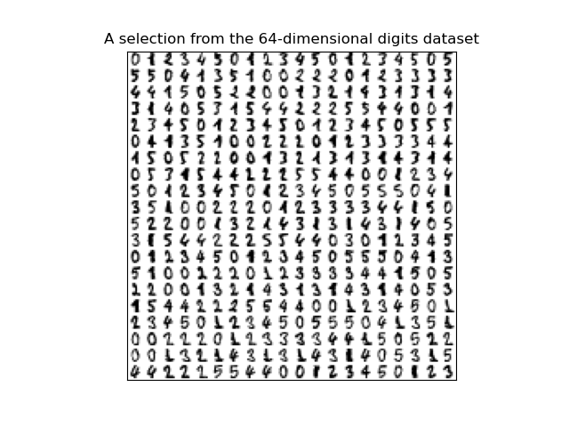
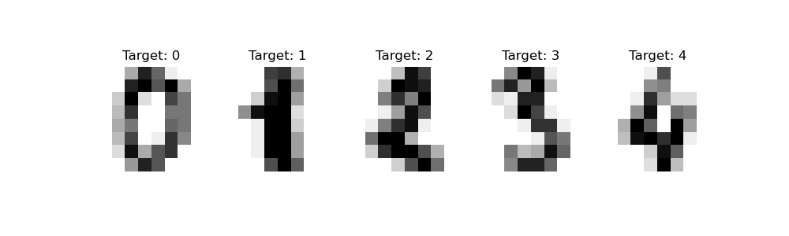
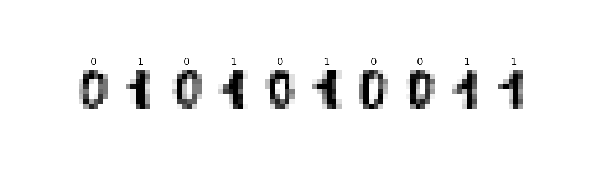

Program 10: Classifying Digits. Due noon, Thursday, 14 April.
This program uses the canonical MNIST dataset of hand-written digits discussed in Lecture #18 and available in sklearn digits dataset:
Our goal is to predict what number is represented by a vector in the data set. For example, the last line contains a handwritten number '4'. Each entry in the dataset is labeled by the number represented in its gray scale images. The labels ranges from 0 to 9.
We will first build binary classifers for the data when restricted to entries whose are labeled 0 or 1, and then classify more diverse subsets.
For the examples, we first load in the digits dataset from sklearn:
Using our functions to restrict the data and targets datasets to 0's and 1's, we can split the data and fit and test the various models:
All of these models do very well also. Lowering the training set to just 10% of the available input data, we can see which model does the best with for a dataset of those with labels 6 and 7 (in case of ties, return the first one that has that value).
Learning Objective: to enhance model building and comparison skills, using standard packages.
Available Libraries: pandas, numpy, pickle, sklearn, and core Python 3.6+.
Data Sources: MNIST dataset of hand-written digits, available in sklearn digits dataset.
Sample Datasets: sklearn digits dataset.

The dataset has 1797 scans of hand-written digits.
Each entry has the digit represented (target) as well as the 64 values representing the gray scale for the 8 x 8 image. The first 5 entries are:

The gray scales for the first 5 entries, flattened to one dimensional array:
[[ 0. 0. 5. 13. 9. 1. 0. 0. 0. 0. 13. 15. 10. 15. 5. 0. 0. 3. 15. 2. 0. 11. 8. 0. 0. 4. 12. 0. 0. 8. 8. 0. 0. 5. 8. 0. 0. 9. 8. 0. 0. 4. 11. 0. 1. 12. 7. 0. 0. 2. 14. 5. 10. 12. 0. 0. 0. 0. 6. 13. 10. 0. 0. 0.]
[ 0. 0. 0. 12. 13. 5. 0. 0. 0. 0. 0. 11. 16. 9. 0. 0. 0. 0. 3. 15. 16. 6. 0. 0. 0. 7. 15. 16. 16. 2. 0. 0. 0. 0. 1. 16. 16. 3. 0. 0. 0. 0. 1. 16. 16. 6. 0. 0. 0. 0. 1. 16. 16. 6. 0. 0. 0. 0. 0. 11. 16. 10. 0. 0.]
[ 0. 0. 0. 4. 15. 12. 0. 0. 0. 0. 3. 16. 15. 14. 0. 0. 0. 0. 8. 13. 8. 16. 0. 0. 0. 0. 1. 6. 15. 11. 0. 0. 0. 1. 8. 13. 15. 1. 0. 0. 0. 9. 16. 16. 5. 0. 0. 0. 0. 3. 13. 16. 16. 11. 5. 0. 0. 0. 0. 3. 11. 16. 9. 0.]
[ 0. 0. 7. 15. 13. 1. 0. 0. 0. 8. 13. 6. 15. 4. 0. 0. 0. 2. 1. 13. 13. 0. 0. 0. 0. 0. 2. 15. 11. 1. 0. 0. 0. 0. 0. 1. 12. 12. 1. 0. 0. 0. 0. 0. 1. 10. 8. 0. 0. 0. 8. 4. 5. 14. 9. 0. 0. 0. 7. 13. 13. 9. 0. 0.]
[ 0. 0. 0. 1. 11. 0. 0. 0. 0. 0. 0. 7. 8. 0. 0. 0. 0. 0. 1. 13. 6. 2. 2. 0. 0. 0. 7. 15. 0. 9. 8. 0. 0. 5. 16. 10. 0. 16. 6. 0. 0. 4. 15. 16. 13. 16. 1. 0. 0. 0. 0. 3. 15. 10. 0. 0. 0. 0. 0. 2. 16. 4. 0. 0.]]
To start, we will focus on entries that represent 0's and 1's. The first 10 from the dataset are displayed below:

Restricting to just 0's and 1's allows us to build binary classifiers: those distinguishing between two classes. This program employs some of the canonical techiques implemented in sci-kit learn: logistic regression, naive Bayes, support vector machines, and random forests. We will then extend our classifications to larger sets.
The function specifications are below:
select_data(data, target, labels = [0,1]):
This function takes as three input parameters:
Returns the rows of data: a numpy array that
includes rows of equal size flattened arrays,
target a numpy array that contains the labels for each row in data.
labels: the labels from target that the rows to be selected. The default value is [0,1].
data and
target where the value of target is in labels.
Hint: run through the examples at the end of this program description to see ways to work with this dataset.
split_data(data, target, test_size = 0.25, random_state = 21):
This function has four inputs:
Returns the data split into 4 subsets, corresponding to those returned by train_test_split:
data: a numpy array that
includes rows of equal size flattened arrays,
target a numpy array corresponding to the rows of data.
test_size: the size of the test set created when the data is divided into test and training sets with train_test_split. The default value is 0.25.
random_state: the random seed used when the data is divided into test and training sets with train_test_split. The default value is 21.
x_train,
x_test,
y_train, and
y_test.
To ensure good representation across the classes, the stratify parameter should be used with the data labels (i.e. stratify=target included in the call to train_test_split).
fit_model(x_train, y_train, model_type='logreg'):
This function takes four input parameters:
Fits the specifed model to the x_train: the independent variable(s) for the analysis.
y_train: the dependent variable for the analysis.
model_type: the type of model to use. Possible values are 'logreg', 'svm', 'nbayes', and 'rforest'. See below for the specified parameters for each model. The default value for this parameter is 'logreg'.
x_train and
y_train data, using sklearn. Additional notes for each model:
The resulting model should be returned as bytestream, using pickle.
Hint: for more details on setting up each of these models, see Lecture 18 and the associated notebooks and reading.
logreg: Logistic Regression: For logistic regression, use the SVM classifier to set up the model, sklearn.linear_model.LogisticRegression with solver solver = 'saga', regularization penalty='l2', and max iterations max_iter=5000 (Note that it's the letter L in 'l2', not a 1.).
nbayes: Naive Bayes: use the Gaussian Naive Bayes classifier to set up the model, sklearn.naive_bayes.GaussianNB.
svm: Support Vector Machine: use the SVM classifier to set up the model, sklearn.svm.SVC with the radial basis function kernel RBF kernel='rbf'.
rforest: Random Forest: use the random forest classifier to set up the model, sklearn.ensemble.RandomForestClassifier with 100 estimators and the random state set to 0 (i.e. n_estimators=100, random_state=0).
predict_model(mod_pkl, xes):
This function takes two input parameters:
Returns the values that the model predicts for the inputted independent variables (that is, the "y_estimate" gives the mod_pkl: a object serialization of a trained model (i.e. a pickled bytestream). The possible model approaches are logistic regression, support vector machine, naive Bayes, and random forest.
xes: the independent variable(s) for the analysis with the same dimensions as which the model was trained.
xes).
score_model(mod_pkl,xes,yes):
This function takes three input parameters:
Returns the confusion matrix for the model.
mod_pkl: a object serialization of a trained model. The possible model approaches are logistic regression, support vector machine, naive Bayes, and random forest.
xes: the independent variable(s) for the analysis with the same dimensions as which the model was trained.
yes: the dependent variable(s) for the analysis with the same dimensions as which the model was trained.
compare_models(data, target, test_size = 0.25, random_state = 21, models = ['logreg','nbayes','svm','rforest']):
This function has five inputs:
This function calls data: a numpy array that
includes rows of equal size flattened arrays,
target a numpy array that takes values 0 or 1 corresponding to the rows of data.
test_size: the size of the test set created when the data is divided into test and training sets with train_test_split. The default value is 0.25.
random_state: the random seed used when the data is divided into test and training sets with train_test_split. The default value is 21.
models: a list of names of models that fit_model accepts. The default value is ['logreg','nbayes','svm','rforest'].
split_data with the first four parameters to create four subsets:
x_train,
x_test,
y_train, and
y_test.
For each of the specified models in models, calls the function above to fit each model to the training data, and computes the accuracy (which can be computed from the sum of the diagonal of the confusion matrix, or more simply using the score() function of each model). The function returns the name of the model with highest accuracy score and its accuracy score. In case of ties for the best score, return the first one that has that value.
As we saw in lecture, the data set is labeled with the digit represented and the types of
these labels and the data is numpy arrays:
#Using the digits data set from sklearn:
from sklearn import datasets
digits = datasets.load_digits()
print(digits.target)
print(type(digits.target), type(digits.data))
Let's flatten the entries, using the numpy's reshape function:
[0 1 2 ... 8 9 8]
<class 'numpy.ndarray'> <class 'numpy.ndarray'>
The labels of the first five elements in our dataset and their flattened representation:
n_samples = len(digits.images)
data = digits.images.reshape((n_samples, -1))
print(f'The labels for the first 5 entries: {digits.target[:5]}')
print(data[0:5])
We can restrict the dataset to just binary digits:
The targets for the first 5 entries: [0 1 2 3 4]
[[ 0. 0. 5. 13. 9. 1. 0. 0. 0. 0. 13. 15. 10. 15. 5. 0. 0. 3.
15. 2. 0. 11. 8. 0. 0. 4. 12. 0. 0. 8. 8. 0. 0. 5. 8. 0.
0. 9. 8. 0. 0. 4. 11. 0. 1. 12. 7. 0. 0. 2. 14. 5. 10. 12.
0. 0. 0. 0. 6. 13. 10. 0. 0. 0.]
[ 0. 0. 0. 12. 13. 5. 0. 0. 0. 0. 0. 11. 16. 9. 0. 0. 0. 0.
3. 15. 16. 6. 0. 0. 0. 7. 15. 16. 16. 2. 0. 0. 0. 0. 1. 16.
16. 3. 0. 0. 0. 0. 1. 16. 16. 6. 0. 0. 0. 0. 1. 16. 16. 6.
0. 0. 0. 0. 0. 11. 16. 10. 0. 0.]
[ 0. 0. 0. 4. 15. 12. 0. 0. 0. 0. 3. 16. 15. 14. 0. 0. 0. 0.
8. 13. 8. 16. 0. 0. 0. 0. 1. 6. 15. 11. 0. 0. 0. 1. 8. 13.
15. 1. 0. 0. 0. 9. 16. 16. 5. 0. 0. 0. 0. 3. 13. 16. 16. 11.
5. 0. 0. 0. 0. 3. 11. 16. 9. 0.]
[ 0. 0. 7. 15. 13. 1. 0. 0. 0. 8. 13. 6. 15. 4. 0. 0. 0. 2.
1. 13. 13. 0. 0. 0. 0. 0. 2. 15. 11. 1. 0. 0. 0. 0. 0. 1.
12. 12. 1. 0. 0. 0. 0. 0. 1. 10. 8. 0. 0. 0. 8. 4. 5. 14.
9. 0. 0. 0. 7. 13. 13. 9. 0. 0.]
[ 0. 0. 0. 1. 11. 0. 0. 0. 0. 0. 0. 7. 8. 0. 0. 0. 0. 0.
1. 13. 6. 2. 2. 0. 0. 0. 7. 15. 0. 9. 8. 0. 0. 5. 16. 10.
0. 16. 6. 0. 0. 4. 15. 16. 13. 16. 1. 0. 0. 0. 0. 3. 15. 10.
0. 0. 0. 0. 0. 2. 16. 4. 0. 0.]]
which will print out the labels for the first 5 binary entries:
binaryDigits = [(d,t) for (d,t) in zip(data, target) if t <= 1]
bd,bt = zip(*binaryDigits)
print(f'The targets for the first 5 binary entries: {bt[:5]}')
Let's do the same with our function:
The targets for the first 5 binary entries: (0, 1, 0, 1, 0)
which will print out the labels for the first 5 binary entries:
bin_dig, bin_tar = select_data(data,digits.target)
print(f'The targets for the first 5 binary entries: {bin_tar[:5]}')
We can also select for other sets of labels:
The targets for the first 5 binary entries: (0, 1, 0, 1, 0)
which will print:
#Selecting on 6's and 7's:
dig67, tar67 = select_data(data, digits.target, labels=[6, 7])
print(f"The targets for the first 5 6's & 7's entries: {tar67[:5]}")
#Selecting on evens:
dig_even, tar_even = select_data(data, digits.target,labels=[0, 2, 4, 6, 8])
print(f"The targets for the first 5 even entries: {tar_even[:5]}")The targets for the first 5 6's & 7's entries: (6, 7, 6, 7, 6)
The targets for the first 5 even entries: (0, 2, 4, 6, 8)
will print:
x_train, x_test, y_train, y_test = split_data(bin_dig, bin_tar, test_size=0.5)
log_pkl = fit_model(x_train, y_train)
y_predict = predict_model(log_pkl, x_train)
log_cmatrix = score_model(log_pkl, x_test, y_test)
print(f'prediction: y_predict\nconfusion matrix:\n log_cmatrix')
The logistic regression model does extremely well, making only one wrong prediction.
Let's see how each of the other models does with the same training and testing subsets:
prediction: [1 1 1 1 0 0 0 1 0 0 0 0 0 1 1 1 0 1 0 0 0 0 1 1 0 1 1 0 0 1 0 1]
confusion matrix:
[[89 0]
[ 1 90]]
will print:
for m in ['nbayes','svm','rforest']:
log_pkl = fit_model(x_train,y_train, model_type=m)
log_cmatrix = score_model(log_pkl,x_test,y_test)
print(f'The confusion matrix for {m} is:\n {log_cmatrix}')
The confusion matrix for nbayes is:
[[88 1]
[ 1 90]]
The confusion matrix for svm is:
[[89 0]
[ 0 91]]
The confusion matrix for rforest is:
[[89 0]
[ 0 91]]
will print:
best_mod, best_score = compare_models(dig67,tar67,test_size=0.9,random_state=22)
print(f"The best model for the 6 and 7's dataset is {best_mod} with score {best_score}.")
While we have focused on binary datasets, the classifiers from sklearn can also be trained for multiclass datasets. Let's try the classifiers on all digits and a training set of 10% of the data:
The best model for the 6 and 7's dataset is logreg with score 1.0.
The SVM classifer did the best with:
best_mod, best_score = compare_models(data,digits.target,test_size=0.9,random_state=22)
print(f"The best model for the 6 and 7's dataset is {best_mod} with score {best_score}.")
The best model for the full dataset is svm with score 0.9375772558714462.